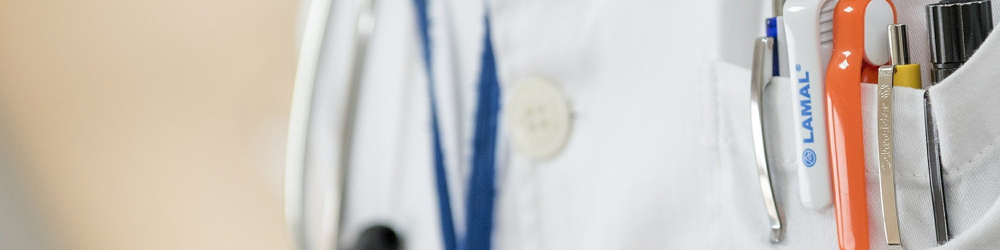

<!--
  Generated template for the DashboardPage page.

  See http://ionicframework.com/docs/components/#navigation for more info on
  Ionic pages and navigation.
-->
<ion-header no-border-bottom>

  <ion-navbar color="primary" class="home-nav">

      <ion-title >{{ 'DASHBOARD_TITLE' | translate }}</ion-title>
      <button ion-button menuToggle  >
          <ion-icon name="menu"></ion-icon>
        </button>   
  </ion-navbar>
</ion-header>


<ion-content padding class="animated slideInLeft">

    <div class="dashboard-search">
    <ion-searchbar [(ngModel)]="searchTerm" (ionInput)="setFilteredItems()" autocomplete="on" cancelButtonText="Cancel" placeholder="{{ 'NEXT_APPOINTMENTS_MENU' | translate }}" showCancelButton="false" type="text" ></ion-searchbar> 

    <ion-list *ngIf="searchFlag">
        <ion-item-sliding class="" *ngFor="let item of items" >
          <button ion-item (click)="selectedItem(item)">
            <h4>{{ item.title }} </h4>
            <p>22/06/2010 {{ 'AT' | translate }} 17:00  </p>
            <ion-note item-end class="remote_type">
              Precential
            </ion-note>
            <ion-note item-end>
              <ion-icon name="arrow-forward"></ion-icon>
            </ion-note>
          </button>
        </ion-item-sliding>
        </ion-list>

    </div>

        
  
    <div class="dashboard-logo">
         
    </div>

    <ion-grid class="dashboard-shortcuts ">       

        <ion-row >
          <ion-col class="history-img" (click)="medicalHistoryCall()">            
              <div class="myOverlay">
                  <h2 >{{ "MEDICAL_RECORD" | translate }}</h2>
               </div>
             
          </ion-col>
        </ion-row>        

        <ion-row >
          <ion-col class="bottom-col contact" (click)="personalDataCall()">
              <!--   -->
              <i class="fa fa-user-circle-o" aria-hidden="true" style="zoom:2.5;"></i>
              <h3>{{ 'PERSONAL_DATA' | translate }}</h3>
          </ion-col>       
          <ion-col class="bottom-col wifi" (click)="TestConnectionCall()">
            <i class="fa fa-wifi" aria-hidden="true" style="zoom:2.5;"></i>

            <h3>{{ 'TEST_CONNECTION' | translate }}</h3>
              <!--   -->
          </ion-col>
        </ion-row>
   
      </ion-grid>

</ion-content>
